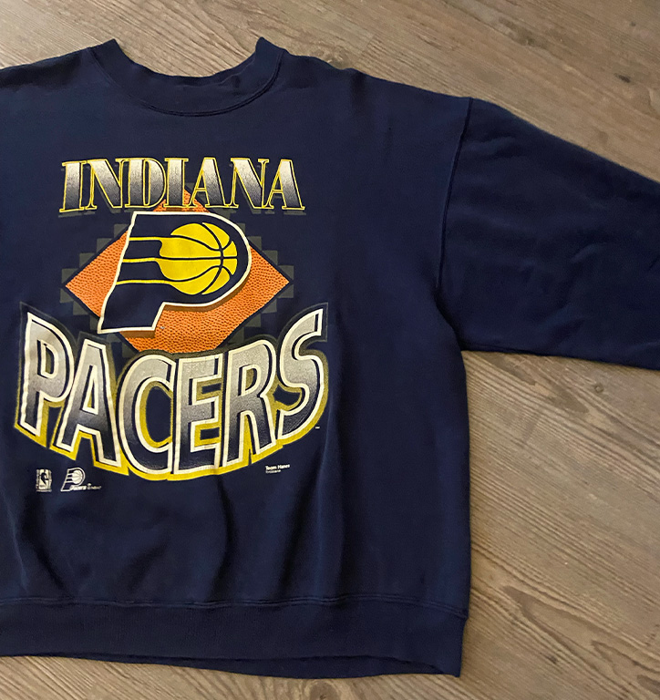

Per jaar wordt er zo'n 91 miljoen ton aan textiel afval geproduceerd, wat op stortplaatsen wordt verbrand tot broeikasgassen, of in de oceaan beland.
De kledingindustrie is een groot verbruiker, en is verantwoordelijk voor jaarlijks 10% van de gehele koolstof uitstoot, door productie, transport en afval.
De textiel industrie zorgt voor 20% van de gehele watervervuiling per jaar, doormiddel van chemicaliën die in het water terecht komen.
Een katoenen trui kost ongeveer 2.700 liter water en wordt niet hergebruikt, water wat goed gebruikt kan worden voor andere doeleinde.
Het fabriceren van katoen (een veel voorkomende stof in de mode wereld) kost de wereldwijde landbouw ongeveer 2.5% kostbare grond.
Voordelen vintage
Door te winkelen bij bevoorbeeld een winkel zoals cream, krijgt kleding een 2de kans, hierdoor neem je niet/nauwelijks deel aan de hierboven genoemde zaken. Je kunt dus makkelijk je steentje bijdragen aan een betere toekomst en een schoner milleu! Wat vintage kleding bovendien ook erg leuk maakt is de prijs in vergelijking met nieuwe items, zo worden veel kledingstukken bij creams aangeboden voor 1/4 deel van de prijs, ook goed voor je portemonnee dus!
Omdat veel van de items die te vinden zijn in vintage winkels een bepaalde ouderdom hebben, uit oudere collecties komen, of uit andere landen zul je de items die je bij deze winkels koopt veel minder snel tegenkomen dan een item die is gekocht bij een grote fast fashion keten.